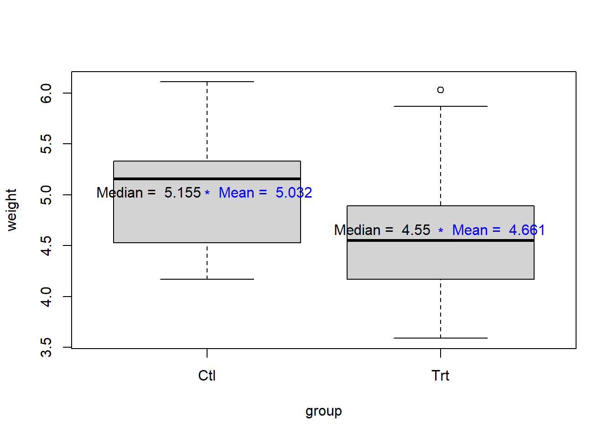
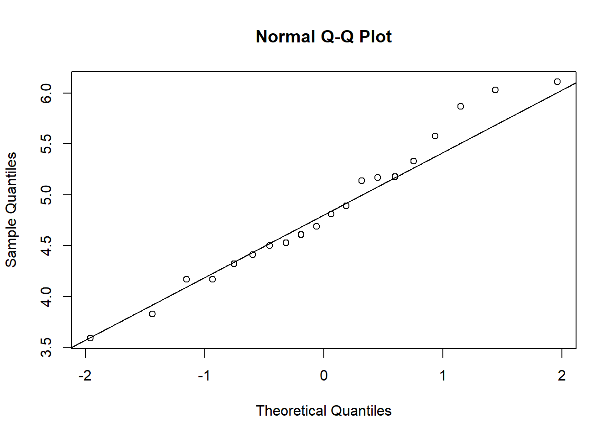
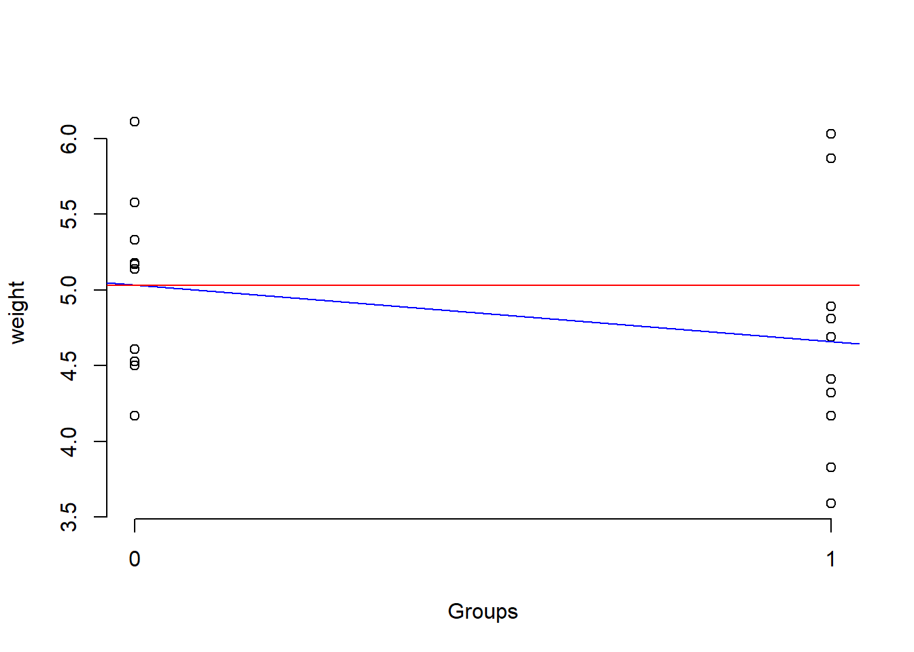
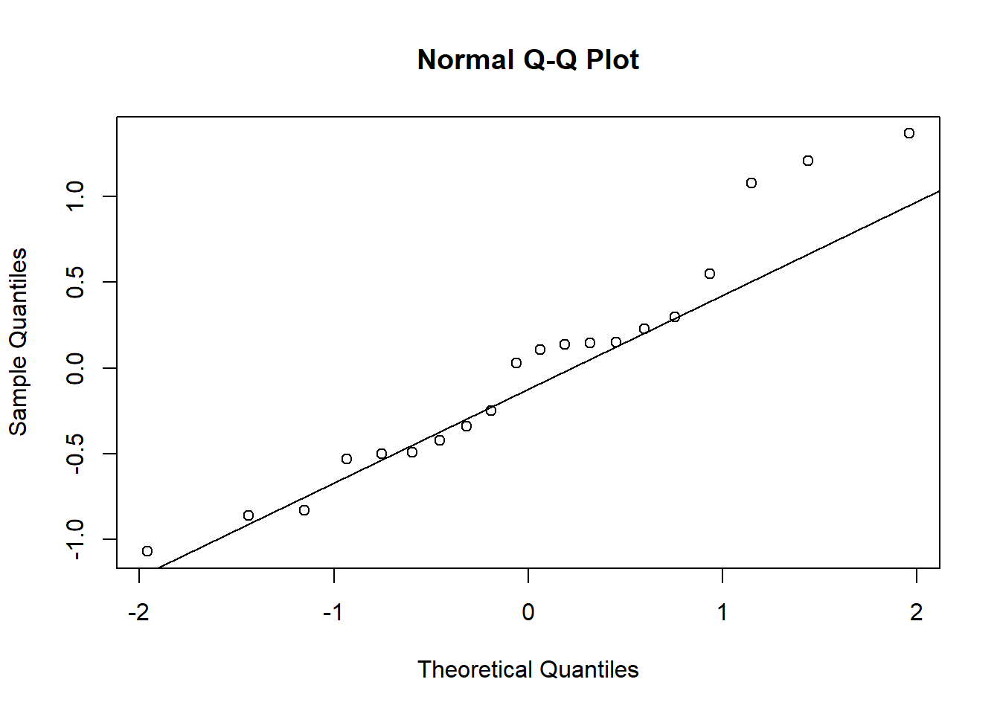

Chapter 2 Model-based Approach
Review of regression analysis and ANOVA from pre-requisites (+ some extra concepts). Below we see an example of a random data generating process that depends on specification of a probability model. We assume that the population data was generated from a Normal distribution, and we are merely dealing with a sample. All our inferences (point estimate or hypothesis testing) will depend on how closely the data fulfill such assumption. We call such approach as ‘model-based’ approach.
2.1 Example
Does plant weight increase with added nutrition?
The following problem was taken from Exercise set 2.5 (2.1) from Dobson and Barnett (2008):
“Genetically similar seeds are randomly assigned to be raised in either a nutritionally enriched environment (treatment group) or standard conditions (control group) using a completely randomized experimental design. After a predetermined time all plants are harvested, dried and weighed.”
2.2 Research question
We want to test whether there is any difference in yield (weight) between the two groups
- plants from nutritionally enriched environment (treatment group) and
- plants from standard conditions (control group)
2.2.1 Notations
- Let \(k\) be the index of each plant, and \(k = 1,...,20\) for both groups.
- Let \(j\) be the index for groups. Here, \(j = 1\) for the treatment group (
Trt), \(j = 2\) for the control group (Ctl). - Let \(Y_{jk}\) denote the \(k\)th observation of weights in the \(j\)th group.
2.2.2 Assumptions
- Assume that the \(Y_{jk}\)’s are independent random variables with \(Y_{jk} \sim N(\mu_j , \sigma^2)\).
- We also assume that the variances are homogenious, that is, \({\sigma_1}^2\) and \({\sigma_2}^2\) are not very different (and could be pooled to one single value of \(\sigma^2\)).
2.2.3 Hypothesis
The null hypothesis \(H_0 : \mu_1 = \mu_2 = \mu\), that there is no difference, is to be compared with the alternative hypothesis \(H_1 : \mu_1 \ne \mu_2\).
2.3 Data
2.3.1 Data table
ctl <- c(4.17,5.58,5.18,6.11,4.50,4.61,5.17,4.53,5.33,5.14)
trt <- c(4.81,4.17,4.41,3.59,5.87,3.83,6.03,4.89,4.32,4.69)
length(ctl);length(trt)## [1] 10## [1] 10## [1] "Ctl" "Ctl" "Ctl" "Ctl" "Ctl" "Ctl" "Ctl" "Ctl" "Ctl" "Ctl" "Trt" "Trt"
## [13] "Trt" "Trt" "Trt" "Trt" "Trt" "Trt" "Trt" "Trt"## [1] "character"## [1] 4.17 5.58 5.18 6.11 4.50 4.61 5.17 4.53 5.33 5.14 4.81 4.17 4.41 3.59 5.87
## [16] 3.83 6.03 4.89 4.32 4.69## [1] "numeric"## [1] "list"## [1] 20 2## 'data.frame': 20 obs. of 2 variables:
## $ group : chr "Ctl" "Ctl" "Ctl" "Ctl" ...
## $ weight: num 4.17 5.58 5.18 6.11 4.5 4.61 5.17 4.53 5.33 5.14 ...The results, expressed in grams, for 20 plants in each group are shown in the following Table.
## Warning: package 'DT' was built under R version 4.0.22.3.2 Visualization
boxplot(weight~ group,data=Plant.Weight.Data)
weight.means <- aggregate(weight ~ group, data=Plant.Weight.Data, FUN=mean)
weight.means## group weight
## 1 Ctl 5.032
## 2 Trt 4.661## group weight
## 1 Ctl 5.155
## 2 Trt 4.550points(1:2, weight.means$weight, pch = "*", col = "blue")
text(c(1:2)+0.25, weight.means$weight, labels =
paste("Mean = ", weight.means$weight), col = "blue")
text(c(1:2)-0.25, weight.means$weight, labels =
paste("Median = ",weight.medians$weight), col = "black")
Wait: so, plan weight reduces as we add nutrition? How confidently can we say that this added nutrition harmful for the plants (e.g., so that the weight will be reduced)?
2.4 Checking assumptions
Test of normality of the outcomes (Shapiro-Wilk normality test):
##
## Shapiro-Wilk normality test
##
## data: Plant.Weight.Data$weight
## W = 0.97311, p-value = 0.8187Therefore, we cannot reject the null hypothesis that samples come from a population which has a normal distribution. Also check a normal quantile-quantile plot:

Test of homogeneity of variances, that tests \(H_0 : \sigma_1 = \sigma_2\) vs. \(H_1 : \sigma_1 \ne \sigma_2\):
## Ctl Trt
## 0.5830914 0.7936757##
## Bartlett test of homogeneity of variances
##
## data: weight by group
## Bartlett's K-squared = 0.79805, df = 1, p-value = 0.37172.5 Analysis
2.5.1 Two-sample t-test
A two-sample (independent) t-test compares the weights of control and treatment group as follows (assuming equal variance; judging from the IQR from the boxplots or the above Bartlett test):
##
## Two Sample t-test
##
## data: weight by group
## t = 1.1913, df = 18, p-value = 0.249
## alternative hypothesis: true difference in means is not equal to 0
## 95 percent confidence interval:
## -0.2833003 1.0253003
## sample estimates:
## mean in group Ctl mean in group Trt
## 5.032 4.661Here, we test \(H_0 : \mu_1 = \mu_2 = \mu\) vs. \(H_1 : \mu_1 \ne \mu_2\).
## t
## 1.191262.5.2 Regression
A simple linear model exploring the relationship between the plant weight and the group status can be fitted as follows:
lm.group.including.intercept <- lm(weight ~ 1 + group, data = Plant.Weight.Data)
lm.group.including.intercept##
## Call:
## lm(formula = weight ~ 1 + group, data = Plant.Weight.Data)
##
## Coefficients:
## (Intercept) groupTrt
## 5.032 -0.371##
## Call:
## lm(formula = weight ~ group, data = Plant.Weight.Data)
##
## Coefficients:
## (Intercept) groupTrt
## 5.032 -0.371## 2.5 % 97.5 %
## (Intercept) 4.56934 5.4946602
## groupTrt -1.02530 0.28330032.5.2.1 Interpretation
Note that the variable group is dummy coded. R generally chooses the first category as the reference category.
## NULL- In this case, the intercept 5.032 tells us the predicted mean value for the plant weights for the control group (reference category of the group variable).
- On the other hand, the slope in interpreted as the expected difference in the mean of the plant weights for that treatment group as compared to the control group. On average, weight is 0.371 units (lb?) lower in plants who are in the treatment condition compared to those in the control condition.
2.5.2.2 Summary of the regression fit
The complete summary of the results is as follows:
##
## Call:
## lm(formula = weight ~ group, data = Plant.Weight.Data)
##
## Residuals:
## Min 1Q Median 3Q Max
## -1.0710 -0.4938 0.0685 0.2462 1.3690
##
## Coefficients:
## Estimate Std. Error t value Pr(>|t|)
## (Intercept) 5.0320 0.2202 22.850 9.55e-15 ***
## groupTrt -0.3710 0.3114 -1.191 0.249
## ---
## Signif. codes: 0 '***' 0.001 '**' 0.01 '*' 0.05 '.' 0.1 ' ' 1
##
## Residual standard error: 0.6964 on 18 degrees of freedom
## Multiple R-squared: 0.07308, Adjusted R-squared: 0.02158
## F-statistic: 1.419 on 1 and 18 DF, p-value: 0.249This is testing a different hypothesis (from the table): \(H_0: \alpha = 0\) vs. \(H_1: \alpha \ne 0\) (\(\alpha\) being the intercept) and \(H_0: \beta = 0\) vs. \(H_1: \beta \ne 0\) (\(\beta\) being the slope). At the bottom of the summary output, the F-statistic tests \(H_0: \beta = 0\) vs. \(H_1: \beta \ne 0\). This is an overall, and could accomodate more slopes if the regression had more slopes. E.g., for 2 slopes, this would have tested \(H_0: \beta_1 = \beta_2 = 0\).
2.5.2.3 Regression plot
Let us visualize the scatter plot and the regression line:
Plant.Weight.Data$group.code <-
ifelse(Plant.Weight.Data$group == "Trt", 1, 0)
Plant.Weight.Data$group.code## [1] 0 0 0 0 0 0 0 0 0 0 1 1 1 1 1 1 1 1 1 1lm.code <- lm(weight ~ group.code, data = Plant.Weight.Data)
plot(weight ~ group.code, data = Plant.Weight.Data,
axes = FALSE, xlab = "Groups")
axis(1, 0:1, levels(Plant.Weight.Data$group))
axis(2)
abline(lm.code, col = "blue") # regression line
abline(h=coef(lm.code)[1], col = "red") # intercept
2.5.2.4 Assumption checking for the residuals
Checking normality of the residuals:
##
## Shapiro-Wilk normality test
##
## data: lm.residual
## W = 0.94744, p-value = 0.3299
2.5.2.5 Null model
A null model (with only intercept):
##
## Call:
## lm(formula = weight ~ 1, data = Plant.Weight.Data)
##
## Residuals:
## Min 1Q Median 3Q Max
## -1.2565 -0.4590 -0.0965 0.3710 1.2635
##
## Coefficients:
## Estimate Std. Error t value Pr(>|t|)
## (Intercept) 4.8465 0.1574 30.79 <2e-16 ***
## ---
## Signif. codes: 0 '***' 0.001 '**' 0.01 '*' 0.05 '.' 0.1 ' ' 1
##
## Residual standard error: 0.704 on 19 degrees of freedom2.5.3 ANOVA
For testing for the significance of the group membership, we can compare the current model to the null model (is adding the variable group in the model useful?).
## Analysis of Variance Table
##
## Model 1: weight ~ 1
## Model 2: weight ~ group
## Res.Df RSS Df Sum of Sq F Pr(>F)
## 1 19 9.4175
## 2 18 8.7292 1 0.68821 1.4191 0.249Or, we could directly test \(H_0 : \mu_1 = \mu_2 = \mu\) vs. \(H_1 : \mu_1 \ne \mu_2\) under the homogeneity of variances assumption:
## Analysis of Variance Table
##
## Response: weight
## Df Sum Sq Mean Sq F value Pr(>F)
## group 1 0.6882 0.68820 1.4191 0.249
## Residuals 18 8.7292 0.48496# Alternate ways to do the same
# car::Anova(lm.group,type="II")
aov.fit <- aov(lm.group)
summary(aov.fit)## Df Sum Sq Mean Sq F value Pr(>F)
## group 1 0.688 0.6882 1.419 0.249
## Residuals 18 8.729 0.4850## Tukey multiple comparisons of means
## 95% family-wise confidence level
##
## Fit: aov(formula = lm.group)
##
## $group
## diff lwr upr p adj
## Trt-Ctl -0.371 -1.0253 0.2833003 0.2490232Checking normality of the residuals (not run; same as above):
# aov.residual <- residuals(aov.fit)
# shapiro.test(aov.residual)
# qqnorm(aov.residual)
# qqline(aov.residual)ANOVA is basically a generalization of the two-sample t-test (verify that the calculated \(F = t^2\)):
## t
## 1.419101An alternative non-parametric version of this independent 2-sample test is as follows (a Kruskal-Wallis rank sum test):
# Assuming groups come from similar shaped populations:
kruskal.test(weight ~ group, data = Plant.Weight.Data) ##
## Kruskal-Wallis rank sum test
##
## data: weight by group
## Kruskal-Wallis chi-squared = 1.7513, df = 1, p-value = 0.18572.6 Verdict
2.6.1 Informal conclusion
With added nutrition, plant weights generally decrease (judging from the point estimate), but such trend could be due to sampling fluctuation (e.g., as the 95% confidence interval includes the null value of 0) and we can not confidently (not at least with 95% confidence) say that adding nutrition will cause plant weights to go down.
2.6.2 A word of caution
Note that, we are inherently trying to infer ‘causality’ out of a statistical analysis, even though our hypothesis is not about ‘cause’ explicitly. Unfortunately, correlation does not imply causation, and we need to know more about the subject-area and study-design before we make such inference or interpretation.
2.7 Exercises (Optional)
- What is the difference between a regression analysis with a dummy coded predictor variable vs. an ANOVA?
- Was multiple pairwise-comparison (
TukeyHSD) necessary in the above example?
- Which
Rpackage includes theleveneTestfunction? (hint: usehelp.search()function.) - Is ‘multicollinearity’ an issue in the above example?
- In the current example, can we interpret the slope as follows:
the change in Y for a 1-unit change in Xwhere, \(Y\) being the outcome and \(X\) being the predictor? Why, or why not?